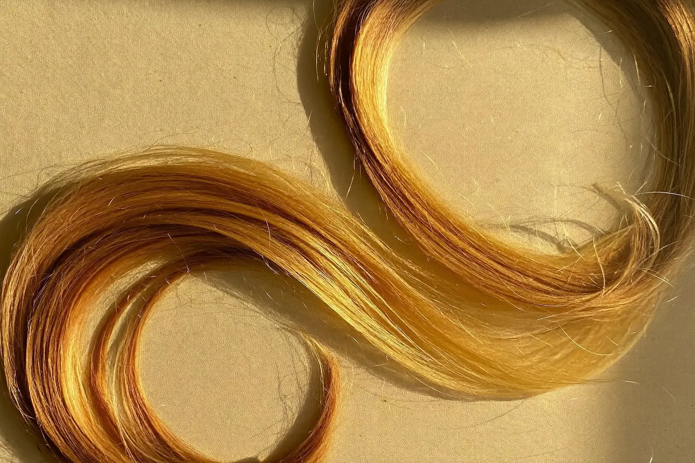
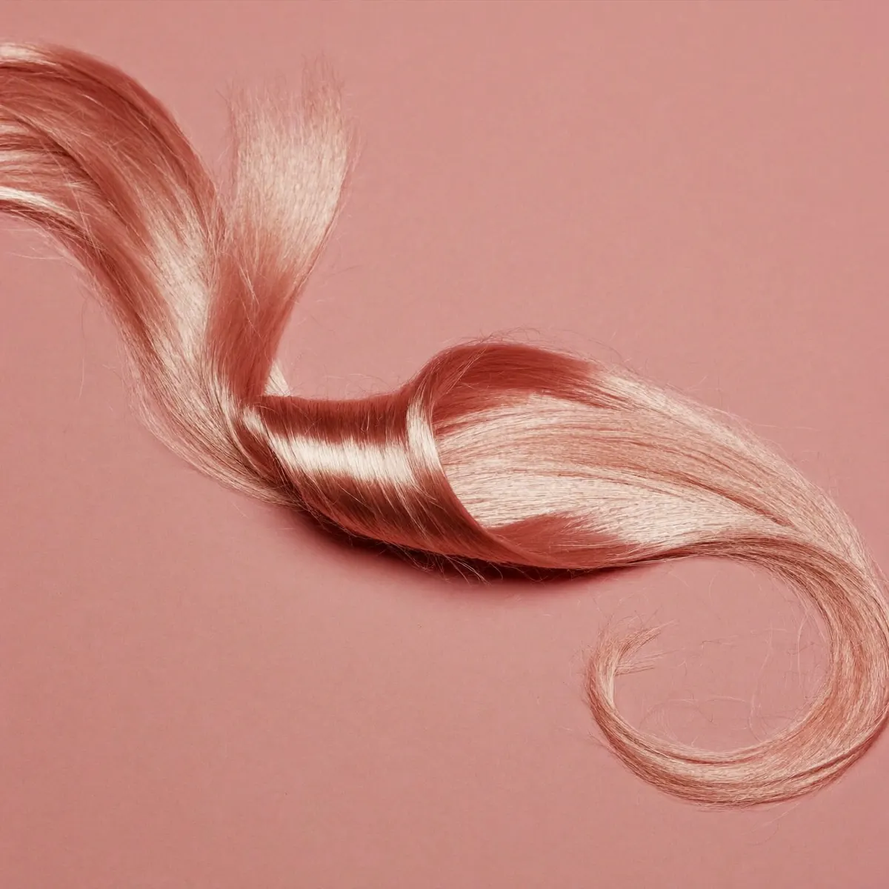
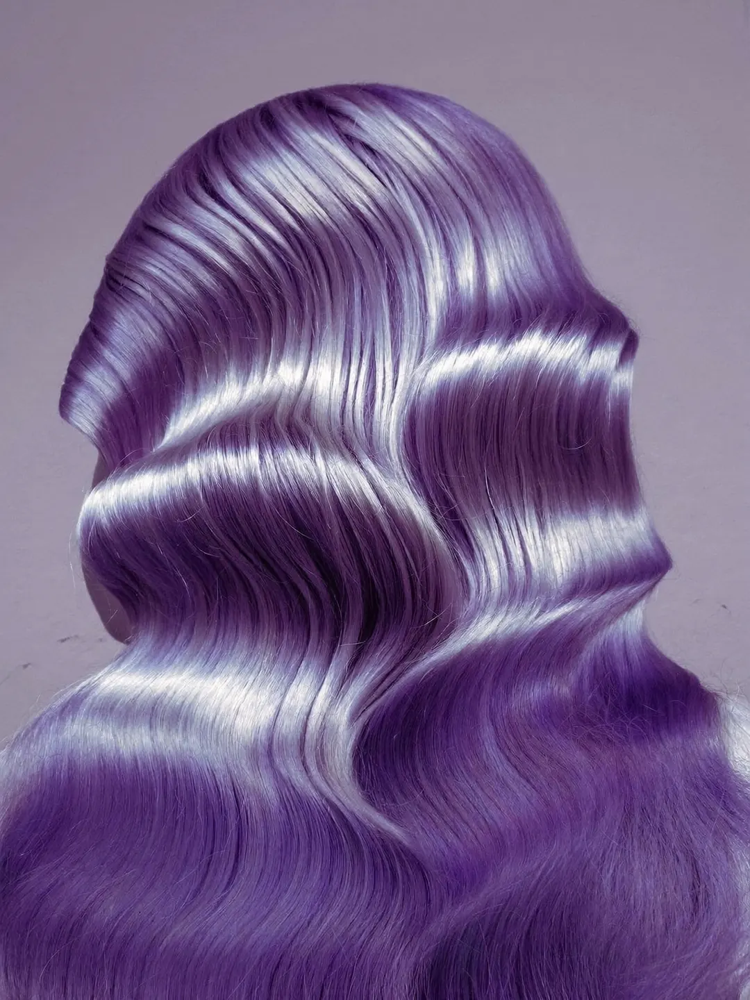
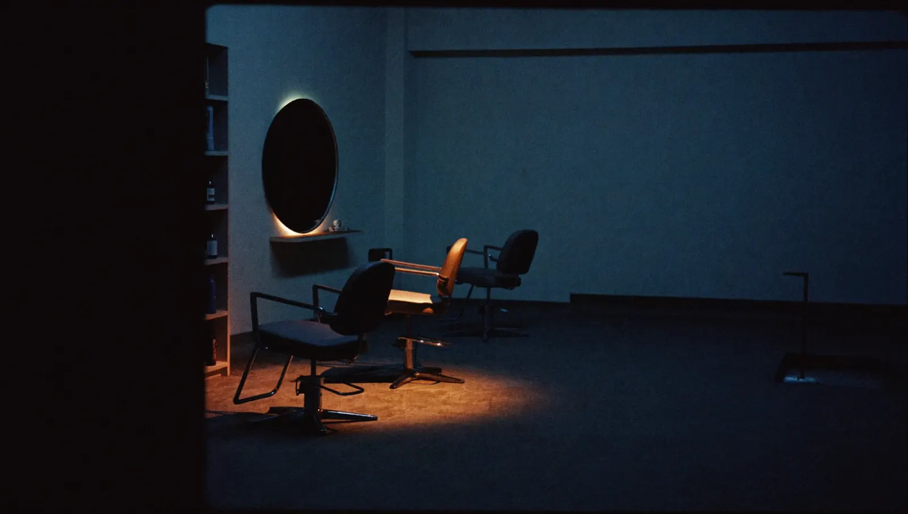

Hue & Cry · colour-specialist salon · King St, Newtown
Colour, loudly.
A salon that does one thing at full volume. Balayage that grows out the way it grew in, gloss that photographs like glass, corrections other salons turned away — and vivids that mean it.
1
5
10
every head on this page is a chapter of our chart — scroll and the paper takes the dye
The chart
Every colour here starts as a number.
Colourists don’t say “warm caramel”. We say 8.3 — level eight, gold tone. The number is the honest version of the promise: what your hair is now, what it can hold, and the exact route between the two.
7.4 · level seven copper
gloss over lived-in base · 35 min
The mixer is a toy, not a promise — your hair’s history decides what a formula can do, and that’s exactly what the consult is for. Bring photos of the colour you want and the colour you’ve had; we’ll bring the chemistry.
Chapter 8.3 · honey — lived-in colour
Grown out is a look,
not a deadline.
Balayage and foils painted where the sun would put them, so the regrowth arrives soft instead of striped. Twelve weeks later it should still look deliberate — that’s the whole brief.
- 8.3Balayage, full crown-to-endsfrom $280 · 3h
- 8.31Half-head foils + tonefrom $210 · 2h
- 8.34Money-piece refreshfrom $120 · 1h

Chapter 9.26 · rose — gloss & tone
The appointment between appointments.
Forty minutes, no commitment, enormous shine. A gloss re-tunes the tone you have — pearl over blonde, rose over fade, cool over brass — and leaves a finish that photographs like glass.
- 9.26Gloss + blow-out$110 · 40m
- 9.2Toner with any colour service+$45
- 9.0Clear gloss, shine only$90 · 30m


Chapter 5.20 · violet — correction
The colour emergency room.
Box-dye black to lived-in brunette. Banded blonde to one even ribbon. Home-bleach amber to something you chose on purpose. Correction is chemistry plus patience — sometimes two visits, always a plan, and we’ll tell you what’s possible before a drop of tint touches your head.
- 5.2Correction, stagedby quote, consult first
- 5.0Vivid / fashion colourfrom $220 · 2.5h
Chapter 1.1 · blue black — the studio
The studio goes quiet at seven.
A small room on King Street — mirrors lit warm, music low. Cuts and finishes too; colour just gets top billing here.
402 King Street, Newtown NSW
tue–fri 9–7 · sat 8–5 · sun–mon closed
consults free, 15 minutes, no obligation
